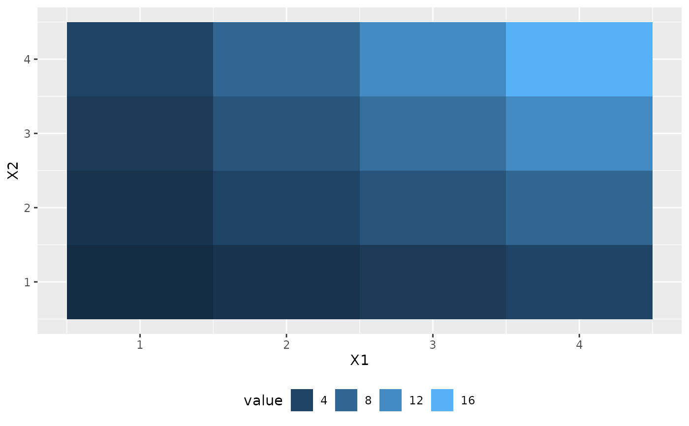
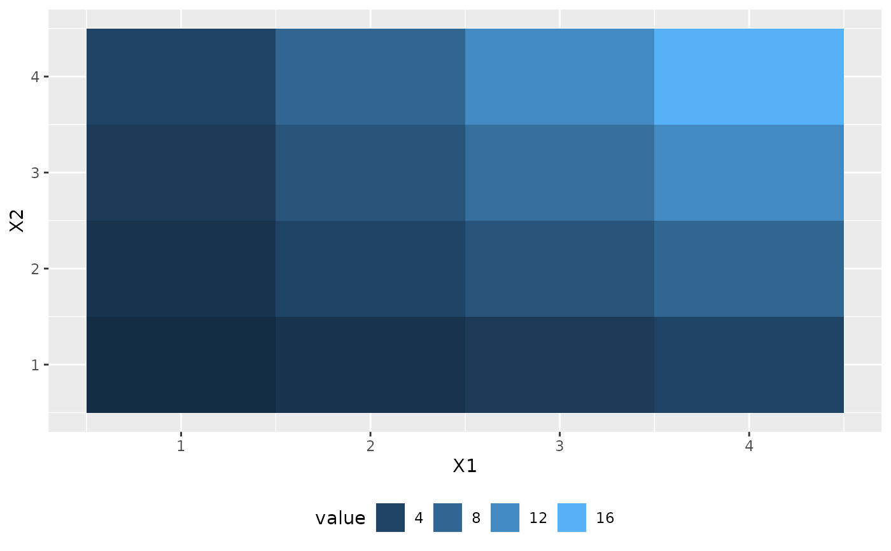

A version of ggplot2::guide_colourbar that displays discretized values and, by default, puts labels in between values.
Usage
guide_colourstrip(
title = ggplot2::waiver(),
title.position = NULL,
title.theme = NULL,
title.hjust = NULL,
title.vjust = NULL,
label = TRUE,
label.position = NULL,
label.theme = NULL,
label.hjust = NULL,
label.vjust = NULL,
barwidth = NULL,
barheight = NULL,
ticks = FALSE,
draw.ulim = TRUE,
draw.llim = TRUE,
inside = FALSE,
direction = NULL,
default.unit = "line",
reverse = FALSE,
order = 0,
available_aes = c("colour", "color", "fill"),
...
)
guide_colorstrip(
title = ggplot2::waiver(),
title.position = NULL,
title.theme = NULL,
title.hjust = NULL,
title.vjust = NULL,
label = TRUE,
label.position = NULL,
label.theme = NULL,
label.hjust = NULL,
label.vjust = NULL,
barwidth = NULL,
barheight = NULL,
ticks = FALSE,
draw.ulim = TRUE,
draw.llim = TRUE,
inside = FALSE,
direction = NULL,
default.unit = "line",
reverse = FALSE,
order = 0,
available_aes = c("colour", "color", "fill"),
...
)Arguments
- title
A character string or expression indicating a title of guide. If
NULL, the title is not shown. By default (waiver()), the name of the scale object or the name specified inlabs()is used for the title.- draw.ulim
A logical specifying if the upper limit tick marks should be visible.
- draw.llim
A logical specifying if the lower limit tick marks should be visible.
- inside
logical indicating where to position labels (see examples).
- direction
A character string indicating the direction of the guide. One of "horizontal" or "vertical."
- reverse
logical. If
TRUEthe colourbar is reversed. By default, the highest value is on the top and the lowest value is on the bottom- order
positive integer less than 99 that specifies the order of this guide among multiple guides. This controls the order in which multiple guides are displayed, not the contents of the guide itself. If 0 (default), the order is determined by a secret algorithm.
- available_aes
A vector of character strings listing the aesthetics for which a colourbar can be drawn.
- ...
ignored.
- theme
A
themeobject to style the guide individually or differently from the plot's theme settings. Thethemeargument in the guide overrides, and is combined with, the plot's theme.
Details
The default behaviour works fell for geom_contour_fill in which the colours represent the value between contour surfaces.
`inside = TRUE“ works better for geom_tile where the colour represents the value of the data and is very similar to ggplot2::guide_legend.
See also
Other ggplot2 helpers:
MakeBreaks(),
WrapCircular(),
geom_arrow(),
geom_contour2(),
geom_contour_fill(),
geom_label_contour(),
geom_relief(),
geom_streamline(),
map_labels,
reverselog_trans(),
scale_divergent,
scale_longitude,
stat_na(),
stat_subset()
Examples
# In this example the lowest colour represents an area of the data with values
# between 80 and 100.
library(ggplot2)
binwidth <- 20
data(volcano)
ggplot(reshape2::melt(volcano), aes(Var1, Var2, z = value)) +
geom_contour_fill(binwidth = binwidth) +
scale_fill_continuous(guide = guide_colourstrip(),
breaks = MakeBreaks(binwidth))
#> Warning: The S3 guide system was deprecated in ggplot2 3.5.0.
#> ℹ It has been replaced by a ggproto system that can be extended.
 # Difference between guide_legend() and guide_colorbar2(inside = T)
df <- reshape2::melt(outer(1:4, 1:4), varnames = c("X1", "X2"))
g <- ggplot(df, aes(X1, X2)) +
geom_tile(aes(fill = value)) +
theme(legend.position = "bottom")
# Tick labels are to the side
g + scale_fill_continuous(guide = guide_legend())

# Tick labels are at the bottom
g + scale_fill_continuous(guide = guide_colourstrip(inside = TRUE))
# Difference between guide_legend() and guide_colorbar2(inside = T)
df <- reshape2::melt(outer(1:4, 1:4), varnames = c("X1", "X2"))
g <- ggplot(df, aes(X1, X2)) +
geom_tile(aes(fill = value)) +
theme(legend.position = "bottom")
# Tick labels are to the side
g + scale_fill_continuous(guide = guide_legend())

# Tick labels are at the bottom
g + scale_fill_continuous(guide = guide_colourstrip(inside = TRUE))